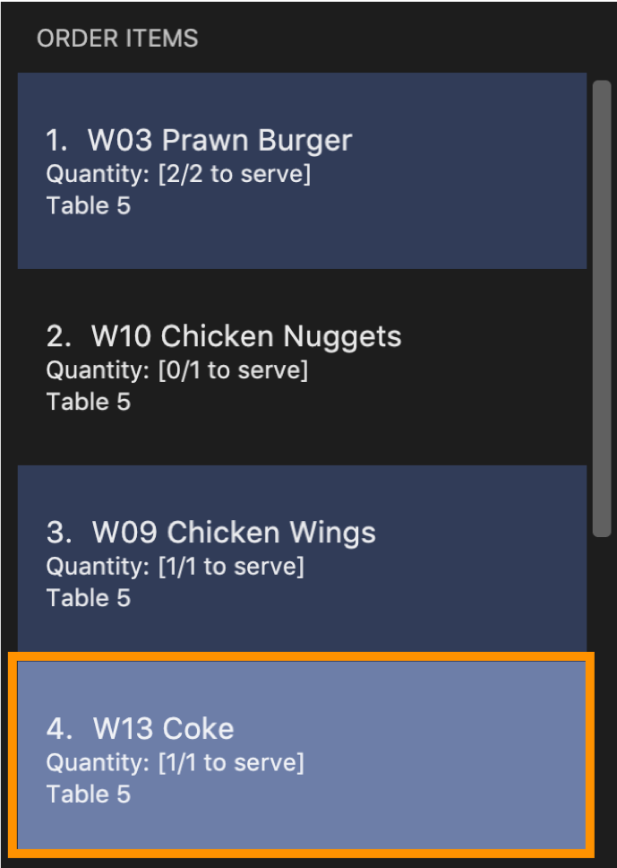
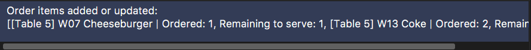

Overview
RestOrRant is a command line interface (CLI) restaurant management application that my team and I designed for the CS2103T Software Engineering module in NUS School of Computing. For our module project, we morphed RestOrRant from an address book application into one that allows restaurant managers and waiters to perform front-end operations efficiently. This includes allocating tables to customers, handling orders, tracking item availability and calculating bills. Managers can also view revenue and order statistics to determine how the restaurant is faring.
We split the application into four main features: Tables, Orders, Menu and Statistics. Each team member was in charge of one feature and mine was the Orders feature. I also conceptualised and implemented the Mode system alongside my team members.
I will be sharing more about the Orders feature and Mode system in the following sections, as well as extracting the relevant parts of the User Guide and Developer Guide that I wrote for these features.
You may refer to the table below for the symbols and formatting used in this portfolio.
|
A grey highlight with monospaced font indicates a command that can be typed into the command box of the application. |
name |
A blue highlight with monospaced font indicates a reference to the codebase. This could be a component, class, method, attribute or file name. |
|
A green tick indicates the expected result that you should see after executing a command in the application. |
|
A lightbulb indicates tips and tricks that might be useful to the user. |
|
A blue information symbol indicates additional information for that section that is good to know. |
|
A red exclamation mark symbol indicates important pointers to take note. |
Summary of contributions
In this section, I will provide a summary of the contributions that I have made to the team project. These contributions include the features that I implemented, as well as other project-related contributions.
-
Major enhancement added (Orders feature): I added the Orders feature and all of its related commands.
-
What it does: It allows restaurant front-end staff to take orders from customers using the
addToOrdercommand, as well as remove incorrectly inputted orders using thedeleteFromOrderorclearOrdercommands. They can track the current list of items ordered for each table (in Table Mode) or across all tables (in Restaurant Mode) and update their serving statuses with theservecommand. -
Justification: Restaurant front-end staff will need this core feature as keeping track of orders is one of the crucial front-end operations that restaurants have to manage. This feature allow orders to be handled more efficiently so that customers can be promptly attended to and served.
-
Highlights: I had to implement new classes across the four components in the architecture to support the Orders feature, allowing me to better understand the project’s architecture. I also learnt to write unit and integration tests for automated testing of the Orders feature.
-
-
Other enhancement added (Mode system): I conceptualised the Mode system and added features related to the changing of modes.
-
What it does: RestOrRant has four modes for each of the four features. Users can switch between modes to use the other features by using commands, such as the
restaurantModeandtableModecommands that I implemented. -
Justification: Translating our main features into different application modes provides a functional and visual distinction between the features and makes RestOrRant more organised and clear for its users. The Mode system also allows us to provide users with only the relevant displays for each feature instead of overwhelming users with all the information at one shot.
-
Highlights: I had to work closely with my other team members as we all worked on implementing different parts of this feature together. The Mode system affects the other commands as they now need to consider the current mode. The Mode system is also designed to be easily extendable to support more modes in the future.
-
-
Code contributed: [Project Code Dashboard]
-
Other contributions:
-
Project management:
-
Charted the direction and progress of the project and facilitated weekly project meetings as the team lead
-
Set up the issues tracker on GitHub for our project
-
Managed the integration of code by merging Pull Requests and ensuring compatibility
-
-
Enhancements to existing features:
-
Updated the GUI colour scheme and implemented the ability to switch between colour schemes for the different modes [PR #128]
-
-
Documentation:
-
Updated the README page [PR #150]
-
Updated the User Guide
-
Updated the Developer Guide
-
-
Community:
-
Tools:
-
Set up GitHub, Travis, AppVeyor and Coveralls for our project
-
Set up auto-publishing of docs
-
-
Contributions to the User Guide
This section shows the additions that I have made to the User Guide to provide information about how the Mode system and Orders features work.
I wrote descriptions for the Mode system and the four commands to change between the modes. My description of the |
Switching to Table Mode : tableMode
You can use this command to switch over to Table Mode for the specified table number to handle the orders of that table.
| You can only access Table Mode for tables that exist in the restaurant and are currently occupied. The tables can be updated in Restaurant Mode. |
| You can use this command in Table Mode if you are switching to a different table number. |
|
The user interface switches to Table Mode. The specified table number is also indicated in the Results Display and the Mode Display. |
For example, after executing 
The table number will also be displayed in the Mode Display until you change the mode, as shown below. 
|
I also wrote the Table Mode section and the descriptions for the five Orders feature commands (including one command for v2.0). My introduction for the Table Mode section and descriptions of the |
Table Mode
In Table Mode, you can handle orders from the current table, which is given by the table number that was specified in the tableMode command.
You can take orders, track the serving status of the items ordered, and calculate the bill for that table in this mode.
The user interface for Table Mode (in this example, for Table 5) is shown in the image below.

The function of the side and main panels are as follows:
-
Order Panel: This panel shows you the list of items ordered by the current table, arranged in chronological order. It also indicates the quantity left to serve for each item, and the background turns dark when the item is fully served.
-
Menu Panel: This panel displays the items on the menu along with their item codes for you to conveniently refer to when taking orders.
Here are the commands that you can use in this mode to efficiently handle the orders in your restaurant.
Adding items to an order : addToOrder
As you are taking an order from customers, this command allows you to record down the items that were ordered by the table by specifying the item code and quantity for each item that was ordered. You may also add an item that was previously ordered by the table to increase its quantity if customers choose to order more.
| The maximum quantity of an item that can be ordered by a table is 2,000,000. |
| The item codes for each item on the menu can be easily found in the Menu Panel. |
You can only add item codes that exist in the menu. You may add items to the menu using the addToMenu command in Menu Mode.
|
| You can add multiple or duplicate order items in a single command! |
| If any of the item codes do not exist in the menu or if the new quantity exceeds 2,000,000, then that item and subsequent items will not be added to the order. |
|
You will see a success message in the Results Display and the updated order items will be displayed in the Order Panel. |
For example, Table 5 initially has 4 items in the Order Panel as shown below. Note that the quantity of Coke ordered is 1.

Suppose the customers at Table 5 want to order 1 more Cheeseburger and 1 more Coke. After executing

The Order Panel will also be updated and you will now see 5 items displayed. As seen in the image below, 1 portion of Cheeseburger has been added as the 5th item, while the quantity of Coke ordered has been updated from 1 to 2. 
|
Contributions to the Developer Guide
This section shows the additions that I have made to the Developer Guide to show the implementation and design considerations for the Mode system and Orders feature.
I described the design of the Mode system as well as the implementation of the commands that allow users to change mode. My write-up for the mode-changing commands is replicated below while my overview of the Mode system can be found here. |
Current Implementation
Changing modes in general
The modes of the application are defined using a Mode enum and the current mode of the application is stored as a private attribute mode in LogicManager. Users can switch between modes in ROR using the {XXX}Mode command, such as menuMode and tableMode. When the mode of the application is changed, we need to update the:
-
Logic component so that the mode attribute in LogicManager reflects the new current mode, since this is used to check if a command can be executed,
-
UI component so that the panels display the information that is relevant to the mode.
For all these commands, these updates are done using a new toMode attribute added to the CommandResult object. As an example, the figure below shows the sequence diagram for when a user executes the menuMode command:

menuMode commandUpon execution of the menuMode command, MenuModeCommand#generateCommandResult() will generate a CommandResult whose toMode attribute is set to MENU_MODE and return it to the LogicManager. Now, the updates can be done for the respective components:
-
Logic component: LogicManager calls CommandResult#newModeStatus() to retrieve the mode to be changed to and updates the current mode stored in its mode attribute by calling LogicManager#changeMode(). The CommandResult is passed to MainWindow in UI.
-
UI component: MainWindow calls CommandResult#newModeStatus() to retrieve the mode to be changed to and updates the display panels by calling MainWindow#handleChangeMode().
| For commands that do not involve a change in mode, CommandResult#newModeStatus() will return null and no updates to the current mode or display will be done. |
Changing to Table Mode for a specific table
All the commands that change modes take no parameters except for Table Mode. When the user wants to perform order-related operations (eg. add an item to the table’s order), the user will first have to switch to Table Mode by typing the tableMode command (or its shortcut TM) followed by the table number of the table that the user wants to perform actions on.
The following sequence diagram shows the relevant parts of what happens when a user executes the tableMode 3 command:

tableMode 3 commandThe Logic and UI component interactions work in a similar way to the other commands that change modes and the implementation is mentioned above. The only difference is the parsing of the argument 3 into a TableNumber object that indicates the table number of the target table to switch to. This TableNumber object is stored as an attribute in TableModeCommand.
Let’s focus on what happens to the Model component when TableModeCommand#execute() is called. The relevant parts of the sequence diagram has been extracted out and shown in the diagram below.
tableMode 3 commandIt first retrieves the Table in RestOrRant that corresponds to its TableNumber attribute. The list of tables are stored within the Tables object in RestOrRant. The read only versions of these objects can be obtained from Model#getRestOrRant() and then ReadOnlyRestOrRant#getTables(). The desired Table object can then be retrieved by passing TableNumber into ReadOnlyTables#getTableFromNumber().
The Table is then set as the selected table in Model using Model#setSelectedTable(). This is to keep track of the current table so that the Table Mode commands like addToOrder and bill can easily perform their operations by getting the table from Model#getSelectedTable().
After which, Model#updateFilteredOrderItemList() is called to update the filtered list such that it only contains order items ordered by the chosen table. This will then update the item list panel in the UI to display only the order items that were ordered by the chosen table.
| TableModeCommand#execute() also checks that the application is not already in Table Mode of the same table number, the table number specified is valid, and the desired table is occupied. |
Design Considerations
| Aspect | Alternative 1 | Alternative 2 |
|---|---|---|
Defining of modes |
Modes are defined using a Mode enum. We decided to choose this option as the enum is an abstraction over the possible modes. Apart from being less prone to errors, it also makes the code more readable as the enum values explicitly state the name of the mode (eg. TABLE_MODE, MENU_MODE) and are stored in Mode variables, making it clear that it refers to a mode and not just any string. |
Modes can be defined with strings (eg. "TableMode") or integers. |
Storing of current mode |
Mode stored in the Logic component (LogicManager). We decided to store the current mode in Logic because we note that most of the work that requires access to the current mode is done here, so providing a quick access will be more efficient. The Model component does not need to know what the current mode is at all, so it would be better to keep the coupling low to facilitate integration. |
Mode stored in the Model component (ModelManager). |
Specifying table number for Table Mode commands |
Table number specified only once when switching to Table Mode, then retrieved from Model#getSelectedTable() for future commands. We decided to go ahead with this implementation as we feel that from a user’s point of view, it would be more convenient to be able to just specify the table number once and then perform a series of operations afterwards. Furthermore, having to parse the table number for every command will also do more work. |
Table number specified for every command (eg. |
I also described the design of the Orders feature and the implementation of the four commands that it currently supports. My design of the Orders feature and my implementation of the |
Classes for Orders feature in Model
The Orders feature was implemented with the introduction of a new set of classes to Model. A new Orders class encapsulates all the methods and classes related to this feature. It also contains a listener that is used to update the storage when any modification is made to the orders. The Orders object is stored in RestOrRant and it exposes a read-only interface ReadOnlyOrders to allow the other components to retrieve order-related information while maintaining data integrity.
Orders contains a UniqueOrderItemList, which contains a list of all the items ordered across all the tables in the restaurant, represented by OrderItem objects. Each OrderItem object consists of 4 objects:
-
TableNumber indicates the table number of the table that ordered the item
-
OrderItemStatus tracks the quantity ordered and the quantity that has yet to be served
-
Code indicates the item code and is used to identify the item ordered
-
Name indicates the item name and is used for display in the UI
OrderItem objects are uniquely identified by TableNumber, Code and Name as each table can only have one order entry for each item.
The Orders Class Diagram below shows the relationship between the classes.
Getting the table number
The Orders feature allows users to perform order-related operations for a specific table. The table number of that table is specified when switching over to Table Mode.
| The table number is stored so that users do not need to keep specifying it when typing the commands. |
As a result, all the commands in the Orders feature will have to retrieve the table number from Model first before they can perform their functions. The current table is stored as a Table object in Model, which is retrieved by calling Model#getSelectedTable(). The table number, which is represented by a TableNumber object, can then be retrieved from that Table. The sequence diagram for this operation is shown below.

Clearing an order
The user may want to remove all the order items from a specific table’s order and this can be done with the clearOrder command.
Current Implementation
When the user enters the clearOrder command, the command is parsed and a ClearOrderCommand object is created.
ClearOrderCommand#execute() is then called, which in turn calls Model#clearOrderItemsFrom() with the current TableNumber. Model acts as a facade and forwards the call to Orders#clearOrderItemsFrom(), and that method’s source code is replicated below.
public void clearOrderItemsFrom(TableNumber tableNumber) {
ArrayList<OrderItem> itemsToDelete = new ArrayList<>();
for (OrderItem orderItem : orderItems) { (1)
if (orderItem.getTableNumber().equals(tableNumber)) {
itemsToDelete.add(orderItem);
}
}
for (OrderItem item : itemsToDelete) { (2)
orderItems.remove(item);
}
indicateModified(); (3)
}In the method above, orderItems is a UniqueOrderItemList that contains all the order items from all the tables. Let’s walk through this method to see how the main functionality of clearOrder is implemented:
| 1 | It first loops through all the items in the UniqueOrderItemList and stores the OrderItem objects with the current TableNumber into a new list. |
| 2 | It then deletes the items in this list from the UniqueOrderItemList. |
| 3 | Finally, it triggers the listener in Orders to indicate that the order item list has been modified. This signals to the LogicManager to update the storage data files by calling Storage#saveOrders(). |
The sequence diagram for when a user executes the clearOrder command is shown below.

clearOrder commandDesign Considerations
| Aspect | Alternative 1 | Alternative 2 |
|---|---|---|
Storing of order items |
The order items from all the tables in RestOrRant can be stored in a single UniqueOrderItemList. We decided to choose this option because we realise that customers are unlikely to order a large number of items in a single table, so it would not be space efficient to create so many UniqueOrderItemList. Furthermore, it also provides the benefit of arranging the order items across all the tables based on when they were ordered without keeping an extra time attribute. This provides the useful functionality of seeing which orders should be fulfilled first in Restaurant Mode. |
Each table has its own UniqueOrderItemList to store the order items for that table. |